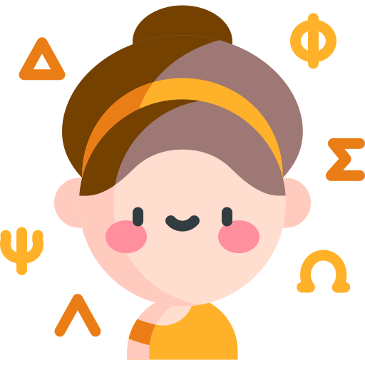

{{'settings.request' | translate}}
{{'settings.request' | translate}}


Ο δάσκαλος {{teacherName}} {{teacherSurname}} θέλει να συνδεθεί με το παιδί {{kidName}} για να μπορεί να του στέλνει καθήκοντα κουίζ, βίντεο και φύλλα εργασίας. Το αποδέχεσαι;
Έχεις δώσει πρόσβαση στον/στην δάσκαλο/α {{teacherName}} {{teacherSurname}} να συνδεθεί με το παιδί {{kidName}} και θα μπορεί να στέλνει σαν καθήκοντα κουίζ, βίντεο και φύλλα εργασίας, καθώς επίσης και να παρακολουθεί τα αποτελεσματα του παιδιού.
{{'single.btn_approve' | translate}}
{{'single.btn_cancel' | translate}}
{{'single.btn_disconnect' | translate}}